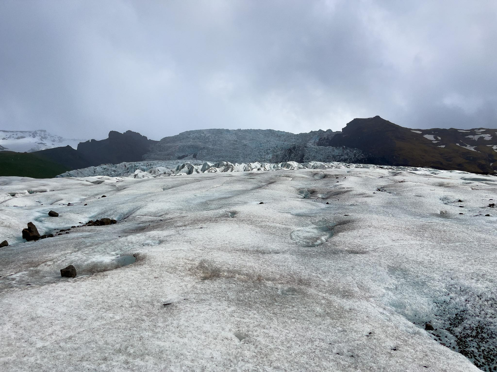

We offer multiple tour's over the summer mostly to the south to see Glacier's and the Black sand beach or to Westfjords to test out all of
the natrual hot springs and possibly see some seals
| Name | When - Spots available | Stops | |
|---|---|---|---|
| South and Glacier's | 25-28 May 7 Left |
Selfoss - Cafe Black sand beach Vík Hótel Vík - layover Svartifoss - Waterfall Fosshotel glacier lagoon - layover Svínafellsjökkul - Glacier |
 |
| Westfjords - Hot Springs | 1-5 june 3 Left |
Borganes - Lunch Glanni - Waterfall Veiðistadurinn - Dinner Holmavík Gesthouse Bistro - layover Reykjaneslaug - Swim Haydalur - Lunch/Dinner Hörgshlíðarlaug - Hot spring Heydalur - layover |
|
| South and Glacier's | 13-16 May 14 Left |
Selfoss - Cafe Black sand beach Vík Hótel Vík - layover Svartifoss - Waterfall Fosshotel glacier lagoon - layover Svínafellsjökkul - Glacier |
|
| Westfjords - Hot Springs | 18-23 june 12 Left |
Borganes - Lunch Glanni - Waterfall Veiðistadurinn - Dinner Holmavík Gesthouse Bistro - layover Reykjaneslaug - Swim Haydalur - Lunch/Dinner Hörgshlíðarlaug - Hot spring Heydalur - layover |